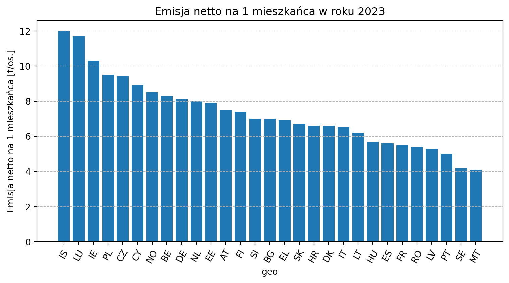

| geo | 2021 | 2022 | 2023 |
|---|---|---|---|
| AT | 8.7 | 8.1 | 7.5 |
| BE | 9.5 | 8.8 | 8.3 |
| BG | 8.3 | 9.0 | 7.0 |
| CY | 9.1 | 9.0 | 8.9 |
| CZ | 11.2 | 10.8 | 9.4 |
| DE | 9.2 | 9.0 | 8.1 |
| DK | 7.6 | 7.2 | 6.6 |
| EE | 9.4 | 10.5 | 7.9 |
| EL | 7.4 | 7.5 | 6.9 |
| ES | 6.1 | 6.1 | 5.6 |
| FI | 8.6 | 8.2 | 7.4 |
| FR | 6.2 | 5.9 | 5.5 |
| HR | 6.3 | 6.4 | 6.6 |
| HU | 6.6 | 6.2 | 5.7 |
| IE | 11.8 | 11.3 | 10.3 |
| IS | 12.7 | 12.5 | 12.0 |
| IT | 7.0 | 7.0 | 6.5 |
| LT | 7.0 | 6.5 | 6.2 |
| LU | 14.7 | 12.6 | 11.7 |
| LV | 5.7 | 5.4 | 5.3 |
| MT | 4.1 | 4.3 | 4.1 |
| NL | 9.5 | 8.7 | 8.0 |
| NO | 9.1 | 9.0 | 8.5 |
| PL | 10.8 | 10.3 | 9.5 |
| PT | 5.4 | 5.4 | 5.0 |
| RO | 6.0 | 5.8 | 5.4 |
| SE | 4.6 | 4.2 | 4.2 |
| SI | 7.6 | 7.4 | 7.0 |
| SK | 7.5 | 6.8 | 6.7 |
Analiza wskaźników statystycznych na podstawie danych Eurostat
1. Krajowe emisje netto gazów cieplarnianych
Opis danych
Wskaźnik przedstawia poziom krajowych emisji netto gazów cieplarnianych. Dane pochodzą z inwentaryzacji emisji przedstawianych corocznie przez państwa członkowskie UE. Uwzględniono emisje następujących gazów: dwutlenek węgla (CO2), metan (CH4), podtlenek azotu (N2O), gazy fluorowane (HFC, PFC, NF3, SF6). Dane obejmują wszystkie sektory gospodarki-z wyłączeniem emisji z międzynarodowego transportu lotniczego i morskiego. Wskaźnik prezentowany jest jako wartość netto, co oznacza, że uwzględnia również efekty pochłaniania CO2 przez gleby i last (LULUCF). Wartości przedstawiono na podstawie danych dla lat 2021-2023, wyrażone jako emisję na 1 mieszkańca w tonach.
Źródło
- adres: https://ec.europa.eu/eurostat/databrowser/view/sdg_13_10/default/table?lang=en
- Kod danych: sdg_13_10
- DOI: 10.2908/sdg_13_10
- Aktualizacja: 13.05.2025 23:00
- Źródło danych: Europejska Agencja Środowiska (EEA)
Tabela
Poniższa tabela została uporządkowana alfabetycznie według symboli państw. Wartości liczbowe przedstawiono z dokładnością do jednego miejsca po przecinku i odnoszą się kolejno do lat: 2021, 2022 oraz 2023. Dane zostały zaprezentowane w formacie tabelarycznym w celu zachowania czytelności oraz umożliwienia bezpośredniego porównania wartości pomiędzy poszczególnymi państwami w ramach tych samych okresów czasowych.
Legenda do symboli państw AT – Austria, BE – Belgia, BG – Bułgaria, CY – Cypr, CZ – Czechy, DE – Niemcy, DK – Dania, EE – Estonia, EL – Grecja, ES – Hiszpania, FI – Finlandia, FR – Francja, HR – Chorwacja, HU – Węgry, IE – Irlandia, IS – Islandia, IT – Włochy, LT – Litwa, LU – Luksemburg, LV – Łotwa, MT – Malta, NL – Niderlandy, NO – Norwegia, PL – Polska, PT – Portugalia, RO – Rumunia, SE – Szwecja, SI – Słowenia, SK – Słowacja.
Wykres z roku 2023
Poniższy wykres przedstawia państwa zapisane w formie symboli, uporządkowane malejąco według wartości analizowanego wskaźnika. Zaprezentowane dane dotyczą roku 2023. Skala na osi pionowej została dobrana tak, aby umożliwić jednoznaczny odczyt wartości, natomiast etykiety na osi poziomej odpowiadają oznaczeniom poszczególnych państw, co zapewnia spójność zapisu z tabelą źródłową.

Legenda do symboli państw AT – Austria, BE – Belgia, BG – Bułgaria, CY – Cypr, CZ – Czechy, DE – Niemcy, DK – Dania, EE – Estonia, EL – Grecja, ES – Hiszpania, FI – Finlandia, FR – Francja, HR – Chorwacja, HU – Węgry, IE – Irlandia, IS – Islandia, IT – Włochy, LT – Litwa, LU – Luksemburg, LV – Łotwa, MT – Malta, NL – Niderlandy, NO – Norwegia, PL – Polska, PT – Portugalia, RO – Rumunia, SE – Szwecja, SI – Słowenia, SK – Słowacja.
Interpretacja
- Malta, Szwecja, Portugalia oraz Rumunia należą do państw, gdzie emisja na 1 mieszkańca jest najmniejsza,
- Islandia, Luksemburg oraz Irlandia są to kraje z najwyższym wskaźnikiem emisji na 1 mieszkańca,
- Polska należąca do państw z najwyższymi odczytami emisji wyróżnia się negatywnie na tle państw sąsiedzkich np. do Słowacji.
Zastosowania analityczne
- Monitorowanie realizacji celów klimatycznych UE
- Porównanie państw UE do państw spoza tej grupy
- Planowanie środków na inwestycje klimatyczne
- Analiza skuteczności państwowych polityk redukcji emisji
- Kontrola kierunków transformacji energetycznej
2. Udział energii odnawialnej w końcowym zużyciu energii brutto ogółem
Opis danych
Wskaźnik przedstawia udział energii ze źródeł odnawialnych w końcowym zużyciu energii brutto zgodnie z dyrektywą w sprawie odnawialnych źródeł energii. Końcowe zużycie energii brutto to energia zużyta przez odbiorców końcowych (końcowe zużycie) powiększona o straty sieciowe i zużycie energii przez własne elektrownie. Dane obejmują lata 2018-2023. Wartości wyrażono w procentach.
Źródło
- adres URL: https://ec.europa.eu/eurostat/databrowser/view/sdg_07_40/default/table?lang=en
- Kod danych online: sdg_07_40
- DOI: 10.2908/sdg_07_40
- Aktualizacja: 21/11/2025 23:00
- Źródło: Eurostat
Tabela
Poniższa tabela została uporządkowana alfabetycznie według symboli państw. Wartości liczbowe zapisano w postaci liczb całkowitych i odnoszą się do kolejnych lat: 2018, 2019, 2020, 2021, 2022 oraz 2023. Zastosowany format liczbowy ujednolica zapis danych w całym zestawieniu, a struktura tabeli umożliwia równoległą prezentację wielu okresów czasowych w ramach jednej struktury danych.
| geo | 2018 | 2019 | 2020 | 2021 | 2022 | 2023 |
|---|---|---|---|---|---|---|
| AT | 34 | 34 | 37 | 35 | 34 | 42 |
| BE | 9 | 10 | 13 | 13 | 14 | 15 |
| BG | 21 | 22 | 23 | 19 | 19 | 23 |
| CY | 14 | 14 | 17 | 19 | 19 | 20 |
| CZ | 15 | 16 | 17 | 18 | 18 | 19 |
| DE | 17 | 17 | 19 | 19 | 21 | 22 |
| DK | 35 | 37 | 32 | 41 | 41 | 44 |
| EE | 30 | 32 | 30 | 37 | 39 | 41 |
| EL | 18 | 20 | 22 | 22 | 23 | 25 |
| ES | 17 | 18 | 21 | 21 | 22 | 25 |
| FI | 41 | 43 | 44 | 43 | 48 | 51 |
| FR | 16 | 17 | 19 | 19 | 20 | 22 |
| HR | 28 | 28 | 31 | 31 | 28 | 28 |
| HU | 13 | 13 | 14 | 14 | 15 | 17 |
| IE | 11 | 12 | 16 | 13 | 13 | 15 |
| IT | 18 | 18 | 20 | 19 | 19 | 20 |
| LT | 25 | 25 | 27 | 28 | 30 | 32 |
| LU | 9 | 7 | 12 | 12 | 14 | 14 |
| LV | 40 | 41 | 42 | 42 | 44 | 43 |
| MT | 8 | 8 | 11 | 13 | 14 | 15 |
| NL | 7 | 9 | 14 | 13 | 15 | 18 |
| PL | 15 | 15 | 16 | 16 | 17 | 17 |
| PT | 30 | 31 | 34 | 34 | 35 | 35 |
| RO | 24 | 24 | 24 | 24 | 24 | 26 |
| SE | 54 | 56 | 60 | 63 | 66 | 66 |
| SI | 21 | 22 | 25 | 25 | 25 | 25 |
| SK | 12 | 17 | 17 | 17 | 17 | 17 |
Legenda do symboli państw AT – Austria, BE – Belgia, BG – Bułgaria, CY – Cypr, CZ – Czechy, DE – Niemcy, DK – Dania, EE – Estonia, EL – Grecja, ES – Hiszpania, FI – Finlandia, FR – Francja, HR – Chorwacja, HU – Węgry, IE – Irlandia, IS – Islandia, IT – Włochy, LT – Litwa, LU – Luksemburg, LV – Łotwa, MT – Malta, NL – Niderlandy, NO – Norwegia, PL – Polska, PT – Portugalia, RO – Rumunia, SE – Szwecja, SI – Słowenia, SK – Słowacja.
Interpretacja
- W roku 2023 Szwecja zanotowała najwyższy udział energii odnawialnej.
- Litwa zanotowała wzrost udziału energii odnawialnej.
- Na Słowacji od 2019 do 2023 roku udział energii odnawialnej był na takim samym poziomie.
Zastosowania analityczne
- Ocena skuteczności inwestycji w odnawialne źródła energii
- Monitorowanie realizacji celów klimatyczno-energetycznych UE